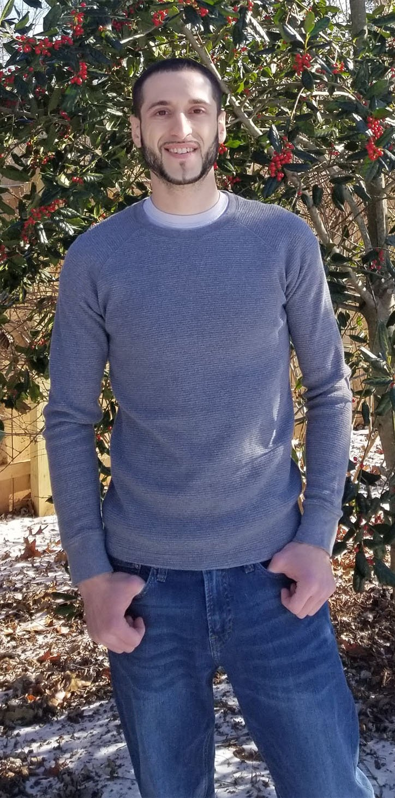

GET TO KNOW
David Alsieux
WELCOME! I'M DAVID ALSIEUX
My mission is to help as many busy professionals and entrepreneurs as possible LOSE WEIGHT so they can create a more IMPACTFUL life full of: energy, confidence, and choices...
...WITHOUT having to step foot in a gym or going on a crazy diet.
Sound unbelievable? It’s not.
I’ve helped 50+ clients lose a total of 1,000+ pounds.
Each person lost anywhere from 10 - 50 pounds in a matter of months while improving their energy, focus, and mood so they can live a longer, healthier, more impactful life!
So, how did I develop this "silver bullet?"
HERE'S MY STORY
When I was growing up, I ate whatever was in front of me. Soda instead of orange juice for breakfast. McDonald's every other day, since it was down the street from my house.
I didn't start to eat healthy until I got to High School.
That's when I began to wrestle and discovered (after some intense practicing) that I was pretty good at it. I wasn't naturally gifted, and so had to work 10 times harder than everyone else, but it paid off. I was told if I wanted to get better though, I should watch what I ate. So I did.
As an outcome, sophomore through senior year I had to cut weight to continue to compete... and I did: 5 pounds, 11 pounds, and then 18 pounds each progressive year.
I never regained the weight and when my teammates saw my results, they asked me for help with their nutrition plans too. I became more and more interested in nutrition after seeing my own body be able to lose and gain at the most 10 pounds in a single day. (No, that wasn't a typo.)
(Of course, I wouldn't recommend anyone losing that much, that quickly -- as a rule of thumb, the first 2-5 days of trying to lose weight is only going to be water... then you can lose fat.)
Because of my small success, I figured I knew it all (or at least most of it). But man was I wrong!
After graduating from college, I began to research nutrition again for this blog. I was blown away by how many conflicting theories there were about food. I began to piece the puzzle together until my world came to a screeching halt:
My grandfather (who raised me) had to be rushed to the hospital.
At 95 years old, he had slipped and fallen on ice. It wasn't until almost half a year later that they discovered he had bleeding in his brain. What was even worse... the doctors had no idea how to save him.
It was a strange feeling, but I somehow knew something existed to help that the doctors just didn't know about. Unfortunately, I couldn't figure out what that was in time.
It wasn't until another half a year passed that I did find what I was looking for...
THE BREAKTHROUGH: HERBS
Two herbs in particular with a reputation of stopping internal and external bleeding (cayenne pepper and a tree sap known as: dragon's blood).
I didn't know anything else about herbs though, so I decided to take the plunge into this new and unexplored world to see what else I could pull out from it.
To my surprise... there was so much MORE VALUE here than what I learned from all the years of researching regular food.
(Considering that there's almost 400,000 species of plants and we only have a fraction of this in our grocery stores, I guess it's not all that surprising in hindsight.)
I began hearing one astonishing testimonial after another from multiple herbalists, and eventually came across the single Herbalist who was different from all the others.
Everything started to click once I discovered the most controversial and direct Herbalist:
Alfredo Darrington Bowman, better known as Dr. Sebi.
I was determined to figure out if he was a fraud, and if not, what did he know.
I watched every last Youtube video he had from 2 minutes to 5 hour-long lectures. I was determined. About 100 pages of notes later, I finally learned all that I could from him. But I still had to test out these newly discovered herbs on myself, so I could really know what was true and what was inflated.
All of a sudden, my breathing improved.
Ever since I was a child I had bad asthma. I had a nebulizer machine at the house and took 4 different inhalers when I wrestled. My intense training improved my asthma tremendously, but once I started to take specifically Mullein leaf my breathing became better than it ever did from exercise and in a fraction of the time.
I then noticed that I stopped getting sick. I was already the type that rarely got sick enough to stay home, but when I did it was BAD. Now I was able to be in my office while everyone else around me was sick and not worry. I could finally survive the winters!
Of course, next I wanted to see how my friends could benefit from the herbs. I started to make my own herbal blends and put them into capsules. My friends noticed the same health benefits that I saw, plus they started to effortlessly lose weight.
They became hooked as quickly as I did.
I knew I was onto something that could benefit a lot of people, so I decided to invest all my free time into perfecting my craft and building upon the work of Dr. Sebi. I discovered more herbs from other sources and reconfigured what would pair well together from experience and nutrition science.
Now, I’m here to help you do the same.

Today, I teach smart, successful people like YOU how to lose weight without having to eat less, or move more.
I’ve helped 50+ clients lose a total of 1,000+ pounds. Each person lost anywhere from 10 - 50 pounds in a matter of months while improving their energy, focus, and mood so they can live a longer, healthier, more impactful life!
My goal is to serve YOU and show you that anything is possible. If you're serious, I can help you reach your goal weight.
I can help you if...
- You’re TIRED of losing the same 7 pounds over and over, left feeling more ANXIOUS and DEPRESSED than when you started, and are finally ready to get off that weight-loss roller coaster.
- You’re already successful in what you do, but know a smaller dress size could seriously BOOST YOUR MINDSET. Imagine shopping and telling the staff there that you have to find a smaller size -- and when you tell them exactly how much smaller their eyes widen with AWE.
- You’ve always wanted to take pictures at the beach with your husband and kids - SHOWING OFF your body and your face. And hell, still look HOT when you're 50 in a bikini! But thought you didn’t have the right genes or you would have to take some crazy experimental fat-burning supplement or stop eating altogether (guess again!)
- You’re ready to get over your limiting beliefs about how much you can loss and how good you can feel, despite having gone through COUNTLESS FAILED DIETS in the past.
WANT TO KNOW A LITTLE MORE ABOUT ME AS A PERSON
(NOT JUST AS A COACH)?
- I grew up in the suburbs of northern New Jersey (where we pump fists, not gas!) never having to move during my childhood. I dormed while at college, and now live with my girlfriend in central New Jersey, again in the suburbs. I enjoy the quiet neighborhood life, while not being too far away from the city. And I LOVE traveling to see other countries. Aside from bringing back souvenirs, I always try to bring back knowledge of an herb I never heard of before.
- My mother's side is from Poland and Russia and my dad's side is from Puerto Rico, Spain, and France. I don't have many family members, and I'm an only child, so I always considered my closest friends as family. My wrestling team was my family in High School and my fraternity was my family in College.
- I have no problem telling you what you need to hear, but would never disrespect anyone. Despite growing up in what many consider "the meanest corner of the country" (NJ / NY); I always stride to treat others with the respect I know they deserve. I'm often told I'm one of the few "true friends" people have, because of that.
- I received my Bachelors of Architecture and Master's Certificate of Sustainable Design from New Jersey Institute of Technology. After college I worked for a year with my graduate professor and then at another firm of around 7 people designing mostly single and two-family houses. I'm proud to be one of the few people that taught myself how to make 3D models and render them to look as if they were real life photographs. The best thing I got from architecture school was the skill to research large amounts of information in a short amount of time and be able to make sense of it all. It trained me to think on my feet and really brought the introverted NERD out of me. Which is great, because that's the only reason why I was able to learn what I know today.

I'm here to help you feel GREAT and Lose Weight Consistently.
When you have energy and feel good, you begin to think clearer, make better decisions, and accomplish a lot more -- in your career, in your relationships, and in every other area in your life
Are you ready to make it happen?

© 2012 - 2020 Wisdom Square | TErms and conditions | privacy policy | disclaimer